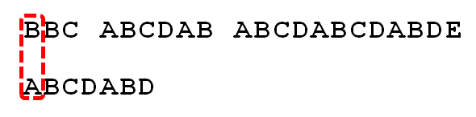
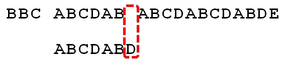
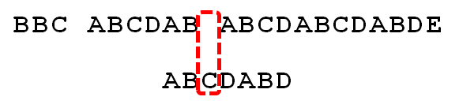
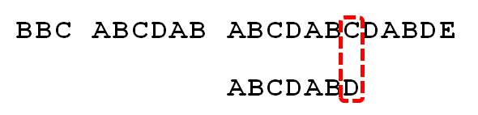
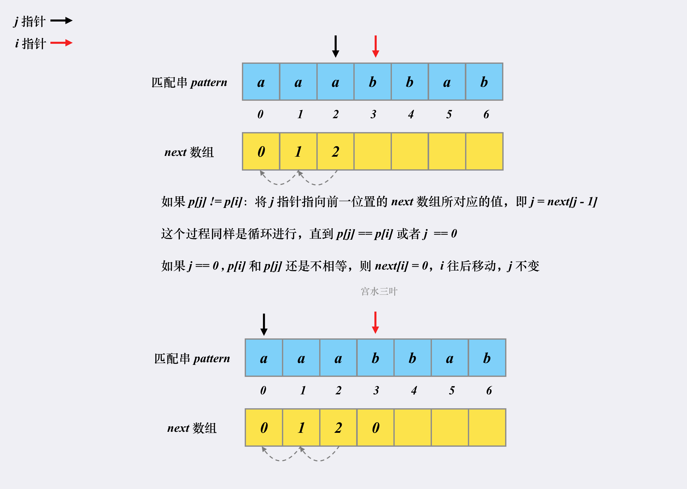

有一个字符串"BBC ABCDAB ABCDABCDABDE"，我想知道，里面是否包含另一个字符串"ABCDABD"？
利用 next 表匹配
-
首先，字符串"BBC ABCDAB ABCDABCDABDE"的第一个字符与搜索词"ABCDABD"的第一个字符，进行比较。因为B与A不匹配，所以搜索词后移一位。
 -
因为B与A不匹配，搜索词再往后移。

-
就这样，直到字符串有一个字符，与搜索词的第一个字符相同为止。

-
接着比较字符串和搜索词的下一个字符，还是相同。

-
直到字符串有一个字符，与搜索词对应的字符不相同为止。
 -
这时，最自然的反应是，将搜索词整个后移一位，再从头逐个比较。这样做虽然可行，但是效率很差，因为你要把"搜索位置"移到已经比较过的位置，重比一遍。

-
一个基本事实是，当空格与D不匹配时，你其实知道前面六个字符是"ABCDAB"。KMP算法的想法是，设法利用这个已知信息，不要把"搜索位置"移回已经比较过的位置，继续把它向后移，这样就提高了效率。

-
怎么做到这一点呢？可以针对搜索词，算出一张《部分匹配表》（Partial Match Table）。这张表是如何产生的，后面再介绍，这里只要会用就可以了。

-
已知空格与D不匹配时，前面六个字符"ABCDAB"是匹配的。查表可知，最后一个匹配字符B对应的"部分匹配值"为2，因此按照下面的公式算出向后移动的位数：
移动位数 = 已匹配的字符数 - 对应的部分匹配值
因为 6 - 2 等于4，所以将搜索词向后移动4位。

-
因为空格与Ｃ不匹配，搜索词还要继续往后移。这时，已匹配的字符数为2（"AB"），对应的"部分匹配值"为0。所以，移动位数 = 2 - 0，结果为 2，于是将搜索词向后移2位。
 -
因为空格与A不匹配，继续后移一位。

-
逐位比较，直到发现C与D不匹配。于是，移动位数 = 6 - 2，继续将搜索词向后移动4位。
 -
逐位比较，直到搜索词的最后一位，发现完全匹配，于是搜索完成。如果还要继续搜索（即找出全部匹配），移动位数 = 7 - 0，再将搜索词向后移动7位，这里就不再重复了。

构建 next 表


如果 p[j] != p[i]，我们就要在 i-1 的已匹配的后缀从前面开始缩小位数，将后缀从前面开始缩小等于将匹配的前缀从后面开始缩小，等价于找 π(π(i−1)−1)，所以 j = next[j - 1]


code
class Solution:
def strStr(self, haystack: str, needle: str) -> int:
if needle == "":
return 0
h_len, n_len = len(haystack), len(needle)
def cal_next():
next = [0]*n_len
j, i = 0, 1
while i < n_len:
if needle[i] == needle[j]:
next[i] = j + 1
i += 1
j += 1
elif j:
j = next[j - 1]
else:
next[i] = 0
i += 1
return next
next = cal_next()
h_i, n_i = 0, 0
flag = -1
while h_i < h_len:
if haystack[h_i] == needle[n_i]:
h_i += 1
n_i += 1
elif n_i:
n_i = next[n_i-1]
else:
h_i += 1
if n_i == n_len:
flag = h_i - n_i
break
return flag
ref
[1] 字符串匹配的KMP算法
[2] 【宫水三叶】简单题学 KMP 算法